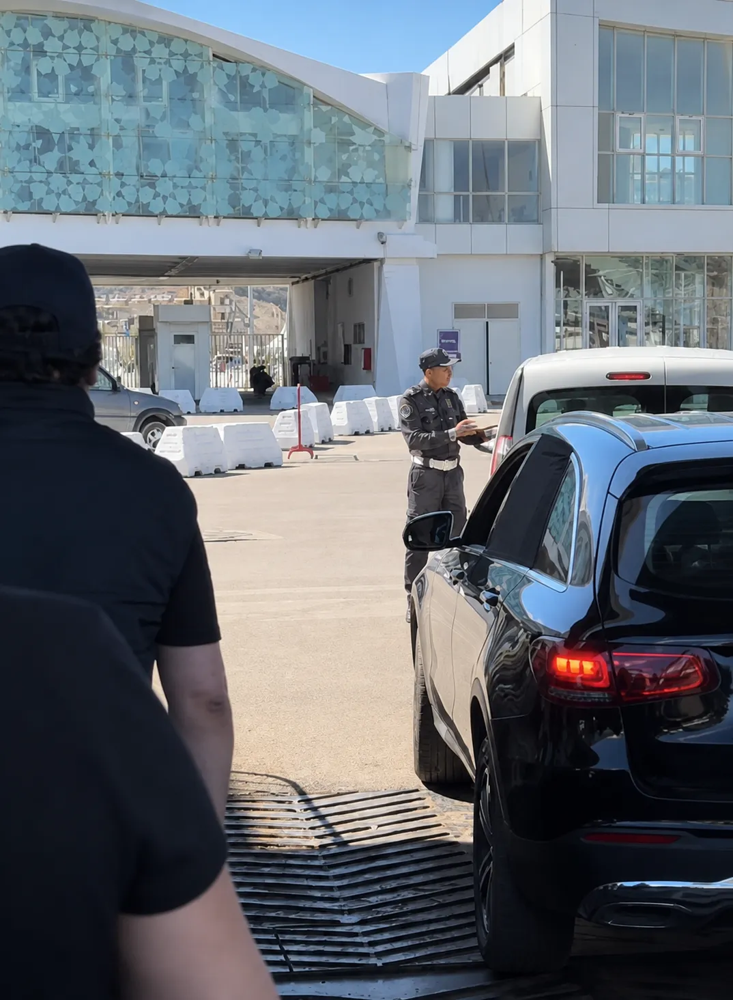

Antes de Salir · Documentación
La Carta Verde y el resto de papeles que nadie te explica bien
Esto es lo primero que tienes que resolver, y lo más importante. Sin la documentación correcta, tu coche no sube al ferry. Así de simple. He visto familias enteras dando la vuelta en el puerto de Algeciras porque les faltaba un solo papel. No te va a pasar a ti.
- Carta Verde (CIS): Es el Certificado Internacional de Seguro. Demuestra que tu coche tiene cobertura de responsabilidad civil en Marruecos. Llama a tu aseguradora al menos 2 semanas antes del viaje y pídela. Es gratuita en la mayoría de compañías. Si tu seguro no cubre Marruecos, puedes contratar un “Seguro Frontera” en el puerto, pero es más caro y cubre menos.
- Pasaporte: Con mínimo 6 meses de validez. El DNI no sirve para entrar en Marruecos. Consulta nuestra guía de documentos.
- Permiso de conducir español: Válido en Marruecos gracias al acuerdo bilateral. No necesitas el carnet internacional, aunque algunos viajeros lo llevan por precaución (10€ en la DGT).
- Permiso de circulación: El documento del coche. El vehículo debe estar a tu nombre. Si no lo está, necesitas una autorización notarial del propietario validada por el Consulado de Marruecos en España. Sin esto, no pasas la aduana.
- Ficha técnica (ITV): Debe estar en vigor. La policía marroquí la comprueba en la aduana.
Error Frecuente — Coche de Alquiler
La mayoría de empresas de alquiler en España prohíben cruzar a Marruecos. Si llevas un coche que no es tuyo, asegúrate de tener la autorización por escrito. Sin ella, el coche se queda en Algeciras.
Algeciras · Tánger Med
Cruzar el Estrecho con tu coche
Dos horas de travesía, un escáner gigante y un mundo nuevo al otro lado.
Embarque · El Ferry con Vehículo
Ferry Algeciras–Tánger Med: billete, embarque y travesía
Si llevas coche, tu puerto es Algeciras. No Tarifa. Tarifa solo opera ferris de pasajeros sin vehículo. Desde Algeciras, el ferry llega a Tánger Med, el gran puerto comercial construido en 2007, a 50 kilómetros al este del centro de Tánger. Es moderno, enorme y eficiente — pero está lejos de la ciudad, lo cual es perfecto si vienes con coche porque conecta directamente con la autopista.
- Navieras: Baleària, Inter Shipping, GNV y Trasmediterránea. En verano hay salidas cada hora. Fuera de temporada, cada 2–3 horas.
- Precio coche + 2 pasajeros: Desde 200€ ida/vuelta en temporada baja. En julio-agosto: 300–350€. Reserva online siempre — en taquilla es más caro y arriesgas quedarte sin plaza.
- Duración: Aproximadamente 2 horas. Los ferris son grandes y estables — mucho menos sensibles al viento que los de Tarifa.
- Llega 2 horas antes: El check-in de vehículos es lento. Tienes que pasar por una fila de coches, mostrar billete, pasaporte y Carta Verde antes de subir la rampa.
- A bordo: Aparcas en la bodega, subes a cubierta y buscas la ventanilla de la Policía Marroquí para sellar el pasaporte durante la travesía. Si no lo haces, perderás horas al desembarcar.
Ventaja sobre Tarifa
Cuando el viento de Levante cierra el puerto de Tarifa (algo frecuente en verano), Algeciras sigue operando. Si tu viaje depende de una fecha fija, Algeciras es la opción más fiable. Consulta nuestra guía completa del ferry para más detalles.
Tánger Med · La Aduana con Coche
Pasar la aduana marroquí sin estrés
Al bajar del ferry con tu coche en Tánger Med, entras en una zona portuaria enorme. No te agobies: sigue los coches delante de ti. El proceso es largo pero lógico si sabes qué esperar. Aquí es donde la mayoría de viajeros novatos se estresan — porque nadie les ha explicado los pasos.
- Paso 1 — Escáner: Nada más bajar del barco, tu coche pasa por un escáner gigante. Baja del vehículo y espera fuera mientras lo escanean. Es rápido.
- Paso 2 — Policía (migración): Ventanilla donde sellan tu pasaporte. Si ya lo sellaron en el ferry, solo comprueban y te dejan pasar.
- Paso 3 — Aduana del vehículo: Aquí presentas la Carta Verde, el permiso de circulación y la ficha técnica. El agente registra tu coche en un formulario D16ter (admisión temporal del vehículo). Este papel es crítico: no lo pierdas. Lo necesitarás para sacar el coche del país.
- Paso 4 — Control final: Un último vistazo y estás fuera del puerto. Verás señales hacia la autopista A4 dirección Tánger ciudad (50 km, 30 minutos, peaje ~20 MAD).
El Formulario D16ter — Importantísimo
Este documento vincula tu pasaporte a tu coche. Si pierdes el D16ter o sales del país sin tu coche, tendrás problemas graves con la policía marroquí. Guárdalo con el pasaporte. Al volver a España, lo entregarás en la aduana de salida.
Tiempo estimado
En temporada baja: 30–45 minutos del ferry a la autopista. En julio-agosto con la Operación Paso del Estrecho: 1–2 horas. Paciencia y agua fría en el coche.

Aduana · Tánger MedMarruecos · Al Volante
Conducir en Tánger
Las autopistas son impecables. Las ciudades, otra historia. Aquí te contamos cómo sobrevivir a ambas.
Al Volante · Conducir en Marruecos
Conducir en Tánger: lo bueno, lo malo y lo real
Vamos a ser honestos: conducir en Marruecos no es como conducir en España. La buena noticia es que las autopistas son fantásticas — nuevas, bien señalizadas y con poco tráfico. La mala noticia es que dentro de las ciudades, el tráfico es un ecosistema propio donde motos, peatones, burros y coches coexisten con reglas que nadie ha escrito.
- Autopistas (A4, A1): Excelentes. Peaje desde Tánger Med hasta Tánger ciudad: ~20 MAD (~1,80€). Se paga en dirhams en efectivo — no aceptan tarjeta ni euros. Velocidad máxima: 120 km/h.
- En ciudad: Velocidad máxima 60 km/h, pero irás a 20 por la realidad del tráfico. Conduce despacio, usa el claxon como aviso y espera lo inesperado. Motos viniendo en dirección contraria, peatones cruzando sin mirar, coches cambiando de carril sin intermitente.
- Gasolina: Más barata que en España — alrededor de 12 MAD/litro (~1,10€). Gasolineras en todas las carreteras principales. Algunas aceptan tarjeta, la mayoría solo efectivo.
- Policía: Controles frecuentes en carretera, especialmente a la entrada de las ciudades. Lleva siempre pasaporte, permiso y Carta Verde a mano. Son rutinarios — sonríe, muestra los papeles y te dejan pasar. Respeta escrupulosamente los límites de velocidad: tienen radares de mano escondidos detrás de cualquier cosa.
- De noche: Evita conducir fuera de autopistas de noche. Las carreteras secundarias no tienen iluminación y es frecuente encontrar peatones, animales y vehículos sin luces.
Aparcar en Tánger
En la Medina, aparca en los parkings vigilados (30–50 MAD/día). Verás hombres con chalecos que te indican dónde aparcar y cuidan tu coche — es el sistema local, déjales 10–20 MAD al volver. En la Marina Bay hay parking organizado. Nunca dejes objetos de valor visibles en el coche.
 Autopista A4 · Tánger
Autopista A4 · TángerAntes de Arrancar · Checklist
Checklist — Todo lo que necesita tu coche
Imprime esta lista o hazle una captura. Cada punto es un problema real que hemos visto en el puerto de Algeciras o en la aduana de Tánger Med. Revísalo todo antes de salir de casa.
Carta Verde (CIS)
Pídela a tu aseguradora 2 semanas antes. Gratuita en la mayoría de compañías. Sin ella, tu coche no cruza.
Pasaporte
6 meses de validez mínimo. Consulta nuestra guía de documentos.
Permiso de conducir
El carnet español es válido. Opcional: carnet internacional (10€ DGT).
Permiso de circulación
El coche debe estar a tu nombre. Si no, autorización notarial validada por el Consulado marroquí.
ITV en vigor
La ficha técnica se comprueba en la aduana. Si está caducada, no pasas.
Billete ferry
Reserva online con antelación. En verano se agotan. Compara en DirectFerries o webs de navieras.
Dirhams en efectivo
Para peajes, gasolina y parking. Cambia en Algeciras o saca de un cajero en Tánger Med.
Seguro médico
La sanidad marroquí es privada y cara. Contrata con EKTA Insurance antes de salir.
Revisión del coche
Aceite, frenos, neumáticos, rueda de repuesto. Una avería en Marruecos puede costarte días.
Preguntas Frecuentes
FAQ Coche España–Tánger
Pasaporte (6 meses de validez), Carta Verde (seguro internacional), permiso de conducir español, permiso de circulación a tu nombre y ficha técnica (ITV en vigor).
Desde 200€ ida/vuelta (coche + 2 pasajeros) en temporada baja. En verano: 300–350€. Reserva online con antelación.
Sí, pero exige atención. Autopistas excelentes. En ciudad: tráfico caótico con motos y peatones. Conduce despacio, usa el claxon y evita conducir de noche fuera de autopistas.
No. El carnet español es válido en Marruecos por acuerdo bilateral. Opcional: tramitar el internacional en la DGT por 10€.
En principio no. La mayoría de empresas españolas lo prohíben. Necesitarías autorización escrita. Mejor: lleva tu coche o alquila uno en Tánger con DiscoverCars.
Parking vigilado Marina Bay (30–50 MAD/día), parkings cerca de la Medina con vigilantes (20–30 MAD), o el parking de tu hotel. Nunca dejes objetos visibles.
Ya sabes cómo llegar · Prepara el resto
Todo para tu viaje a Tánger
Ferry
Ferry Tarifa y Algeciras
Horarios, precios y trucos del cruce.
Leer →Transporte
Moverse en Tánger
Taxis, InDrive y precios reales.
Leer →Alquiler
Alquiler de Coches
Precios, seguros y consejos.
Leer →Seguridad
10 Consejos
Estafas, leyes, emergencias.
Leer →Dinero
Internet y Dinero
Cajeros, cambio, eSIM.
Leer →Documentos
Documentos Marruecos
Pasaporte, visado y seguro.
Leer →